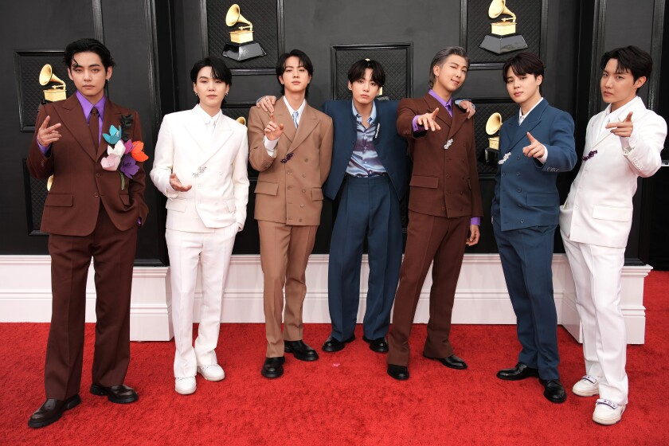

the GLOBAL SENSATIONAL K-POP BOYBAND BTS
BTS members were first discovered in 2010 by their current management company Big Hit Entertainment, a South Korean entertainment company.
After being discovered, the new recruits become trainees who received coaching to prepare them to be superstars. This includes dancing and singing lessons as well as acting and media training.
Many of these trainees are young teenagers between the ages of 13 to 15, according to the study. The boy group's youngest member, JungKook, now 22, was 14 when he first started as a trainee for Big Hit before debuting a few months before turning 16. He shared his journey dating back to his beginnings as a trainee in his single "My Time" that was released in BTS' album "Map of the Soul: 7" this past February.
Trainees prepare to debut as K-pop artists after about three years of training, according to the case study.It's a pretty cut-throat process — according to the Harvard case study, there are around a dozen trainees for every person that makes it. That means upwards of 80 people may have auditioned for BTS, but RM, Jin, Suga, J-Hope, Jimin, V, and Jungkook are the ones who made it.
BTS officially debuted as a seven-member K-pop idol group in the summer of 2013.Their first album "2 COOL 4 SKOOL" saw a fair amount of success, placing tenth on a monthly Korean music chart a month after release. The album's title song, "No more dream" can be interpreted as a commentary on the pressures of growing up as a teenager in Korea.
"A lot of their songs are interlinked with each other, so their lyrics aren't in a vacuum," Jiye Kim, a fan of BTS who is well known in the BTS fandom community for her English translations of BTS content, told Insider. "I'm able to grow alongside them."
Around a year after BTS debuted in 2013, their official fan club came together. The fan club, called "A.R.M.Y.," is short for "Adorable M.C. for Youth."
A few years after their debut in 2015, BTS came in first place on a weekly music performance show on one of Korea's three major television broadcast networks with their first single with "I NEED U" from their third mini-album, "The Most Beautiful Moment in Life, Pt. 1."Since then, the group has continued to shatter records. This past March, BTS' "Map of the Soul: 7" album marked the group's fourth No.1 album on the Billboard 200 chart. The album recorded 347,000 album sales and over 74 million on-demand streams, making it the "largest week for any album in 2020," Billboard reported at the time.
In 2019, BTS became the first K-pop artist to present at the Grammy Awards. The following year, they became the first K-pop artist to perform at the award show. However, fans on social media criticized the music show for not including the group's music in any of their nominations. Halsey, who collaborated with the group for their single "Boy with Luv," supported the group by saying that the "US is so far behind."